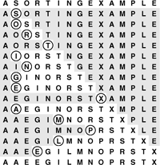

C++ Programming Robert Sedgewick - Princeton University Addison Wesley Professional Algorithms in C++, Parts 1–4: Fundamentals, Data Structure, Sorting, Searching, Third Edition
6.3. Insertion Sort
The method that people often use to sort bridge hands is to consider the elements one at a time, inserting each into its proper place among those already considered (keeping them sorted). In a computer implementation, we need to make space for the element being inserted by moving larger elements one position to the right, and then inserting the element into the vacated position. The sort function in Program 6.1 is an implementation of this method, which is called insertion sort.
As in selection sort, the elements to the left of the current index are in sorted order during the sort, but they are not in their final position, as they may have to be moved to make room for smaller elements encountered later. The array is, however, fully sorted when the index reaches the right end. Figure 6.3 shows the method in operation on a sample file.
During the first pass of insertion sort, the S in the second position is larger than the A, so it does not have to be moved. On the second pass, when the O in the third position is encountered, it is exchanged with the S to put A O S in sorted order, and so forth. Unshaded elements that are not circled are those that were moved one position to the right.

The implementation of insertion sort in Program 6.1 is straightforward, but inefficient. We shall now consider three ways to improve it, to illustrate a recurrent theme throughout many of our implementations: We want code to be succinct, clear, and efficient, but these goals sometimes conflict, so we must often strike a balance. We do so by developing a natural implementation, then seeking to improve it by a sequence of transformations, checking the effectiveness (and correctness) of each transformation.
First, we can stop doing compexch operations when we encounter a key that is not larger than the key in the item being inserted, because the subarray to the left is sorted. Specifically, we can break out of the inner for loop in sort in Program 6.1 when the condition a[j-1] < a[j] is true. This modification changes the implementation into an adaptive sort, and speeds up the program by about a factor of 2 for randomly ordered keys (see Property 6.2).
With the improvement described in the previous paragraph, we have two conditions that terminate the inner loop—we could recode it as a while loop to reflect that fact explicitly. A more subtle improvement of the implementation follows from noting that the test j>l is usually extraneous: indeed, it succeeds only when the element inserted is the smallest seen so far and reaches the beginning of the array. A commonly used alternative is to keep the keys to be sorted in a[1] to a[N], and to put a sentinel key in a[0], making it at least as small as the smallest key in the array. Then, the test whether a smaller key has been encountered simultaneously tests both conditions of interest, making the inner loop smaller and the program faster.
Sentinels are sometimes inconvenient to use: perhaps the smallest possible key is not easily defined, or perhaps the calling routine has no room to include an extra key. Program 6.3 illustrates one way around these two problems for insertion sort: We make an explicit first pass over the array that puts the item with the smallest key in the first position. Then, we sort the rest of the array, with that first and smallest item now serving as sentinel. We generally shall avoid sentinels in our code, because it is often easier to understand code with explicit tests, but we shall note situations where sentinels might be useful in making programs both simpler and more efficient.
Program 6.3. Insertion sort|
This code is an improvement over the implementation of sort in Program 6.1 because (i) it first puts the smallest element in the array into the first position, so that that element can serve as a sentinel; (ii) it does a single assignment, rather than an exchange, in the inner loop; and (iii) it terminates the inner loop when the element being inserted is in position. For each i, it sorts the elements a[l], . . ., a[i] by moving one position to the right elements in the sorted list a[l], . . ., a[i-1] that are larger than a[i], then putting a[i] into its proper position.
template <class Item>
void insertion(Item a[], int l, int r)
{ int i;
for (i = r; i > l; i--) compexch(a[i-1], a[i]);
for (i = l+2; i <= r; i++)
{ int j = i; Item v = a[i];
while (v < a[j-1])
{ a[j] = a[j-1]; j--; }
a[j] = v;
}
}
|
The third improvement that we shall consider also involves removing extraneous instructions from the inner loop. It follows from noting that successive exchanges involving the same element are inefficient. If there are two or more exchanges, we have
t = a[j]; a[j] = a[j-1]; a[j-1] = t;
followed by
t = a[j-1]; a[j-1] = a[j-2]; a[j-2] = t;
and so forth. The value of t does not change between these two sequences, and we waste time storing it, then reloading it for the next exchange. Program 6.3 moves larger elements one position to the right instead of using exchanges, and thus avoids wasting time in this way.
Program 6.3 is an implementation of insertion sort that is more efficient than the one given in Program 6.1 (in Section 6.5, we shall see that it is nearly twice as fast). In this book, we are interested both in elegant and efficient algorithms and in elegant and efficient implementations of them. In this case, the underlying algorithms do differ slightly—we should properly refer to the sort function in Program 6.1 as a nonadaptive insertion sort. A good understanding of the properties of an algorithm is the best guide to developing an implementation that can be used effectively in an application.
Unlike that of selection sort, the running time of insertion sort primarily depends on the initial order of the keys in the input. For example, if the file is large and the keys are already in order (or even are nearly in order), then insertion sort is quick and selection sort is slow. We compare the algorithms in more detail in Section 6.5.
Exercises |  6.15 Show, in the style of Figure 6.3, how insertion sort sorts the sample file E A S Y Q U E S T I O N. 6.15 Show, in the style of Figure 6.3, how insertion sort sorts the sample file E A S Y Q U E S T I O N.
| | 6.16 Give an implementation of insertion sort with the inner loop coded as a while loop that terminates on one of two conditions, as described in the text. | | 6.17 For each of the conditions in the while loop in Exercise 6.16, describe a file of N elements where that condition is always false when the loop terminates. | |  6.18 Is insertion sort stable? 6.18 Is insertion sort stable?
| | 6.19 Give a nonadaptive implementation of selection sort based on finding the minimum element with code like the first for loop in Program 6.3. |
|